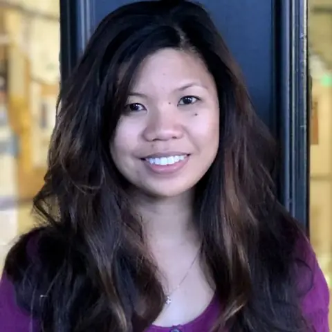

X Chua
Stanford GSB · MSx ’27
Leads product and partnerships. Works with outside stakeholders and shapes how the network is deployed and commanded.
ProductStakeholdersDeployment and C2
A cheap, passive sensor that hears drones at launch and points to where they came from.
One deployment covers a 25 km² grid.
Air-dropped node on one battery.
Commercial parts, built to be expendable.
It only transmits to report a drone.
Design targets · prototype in development
Air defense finds drones in the air. Nobody owns finding where they launch.
Group 2–3 drones launch 5–35 km behind the enemy line, beyond what rear-area sensors can hear.
Fiber-optic and pre-programmed drones give off no radio signal for a scanner to find.
No fielded system turns launches into a picture of where, how many and how often.
Four microphones pick up the hum of a propeller or engine.
The node checks that it is a drone and works out which way it is.
GPS adds the exact time and place to every detection.
A short report goes to a gateway node, which sends one track home.
A launch-site cue for the targeting cell and a daily map of enemy drone activity, for Army and Marine Corps units.
Find drones and their launch points along approach corridors, including drones that radio sensors miss.
Locate where cross-border drones take off. A passive sensor avoids most radio-spectrum restrictions.
Operators, engineers and test ranges: we want to hear from you.
Give ground forces an early, passive warning of where enemy drones launch, so they can act before the next wave.
A low-cost, easy-to-use system that goes from sensor to decision, works up to 50 km out, and covers a 5 km × 5 km square.
An acoustic listening node and the way it is delivered, a mission planning tool, a detection and decision platform, and a draft field doctrine.
Close-in detection under 3 km, radar or camera sensors, and weapons. ATHENE finds and reports; other systems act.
Aircraft in the air are hard to find. Air forces were beaten on the ground.
Drones are the same. Find where they launch, and you can stop the next wave before it is in the air.
“Manoeuvre brigades and divisions struggle to find and neutralize enemy Group 2–3 drone launch sites 5–35 km deep in their area of operations. This puts our forces at high risk and slows manoeuvre.”
“Border Patrol struggles to intercept drones at the US–Mexico border and to locate launch points and operators after a drone turns back, so threat drones get through.”
Group 2–3 drones launch 5–35 km behind the enemy line, beyond what rear-area sensors can hear.
Placed by a recon team, or dropped by a carrier drone. Bearings cross to fix the launch area.
Passive, hard to spot, days unattended, meshed together, and under $1,000 a node.
Engines and propellers make sound even when a drone has no radio link and a small radar cross-section.
Ukraine's Sky Fortress network reportedly uses about 15,000 acoustic nodes to hear drones in flight across its rear area.
No system gives persistent detection of launch sites 5–35 km behind the line, or maps how many drones are launched and how often.
Map stakeholders. Interview end users and innovation leads.
Write problem statements and validate them with a champion.
Build the audio prototype within budget, plus a digital twin of the field.
Proof-of-concept demo to an end user.
Three audio sensors run for 24 hours and detect a Group 2 launch.
It loads military maps with terrain and vegetation, flags likely take-off sites and suggests where to place nodes.
It tracks nodes from delivery onward, detects launches, learns from false alarms and gives a location and target solution.
A US Army or Marine Corps partner sponsors the project.
A low-power chip checks the four mics 30 times a second for the comb-shaped hum of a propeller.
It always keeps the last 30 seconds of sound, so the start of a pass is never lost.
On a hit, it switches on the Raspberry Pi and keeps recording while the Pi boots.
The Pi finds the direction and drone type, sends a 30-byte report and powers off.
A tiny chip listens all the time on about 0.2 W. The Raspberry Pi stays off until the chip hears a likely drone, so a three-day node needs a fraction of the battery.
Estimate for the brain and mics over 72 hours: about 25 Wh and 0.15 kg of cells, against about 325 Wh and 1.6 kg for an always-on Pi 5.

Legs fold flat against the body, so several nodes stack in one pipe about 50 mm wide.
Released from about 10 m, the heavy battery end leads. A small streamer keeps the fall straight, with little drift.
Springs swing the legs out to about 30° and lock. The battery hangs low inside the tripod, so the node is hard to tip.
Launched from a pipe on a carrier drone. Light, expendable and placed where people cannot go.
Set up by a recon team, with mics lifted 1.5–2 m above the ground for the best hearing.
Base perimeters and critical sites, running on site power with no battery limit.
The acoustic sensor and the way it is delivered to the field.
Plans where the nodes go before anyone leaves.
Turns node reports into a launch location.
A draft playbook for the unit that runs the network.
Each drone should be heard by at least two nodes, so spacing should match how far one node can hear: 100–500 m is our planning range. Real fields are denser near likely launch sites and thinner elsewhere; the Mission Planning Tool picks the pattern.
All figures are design targets or estimates from our analysis, not results from field tests.
Leads product and partnerships. Works with outside stakeholders and shapes how the network is deployed and commanded.

Technical StaffBuilds the sensing and decision models: the digital twin of the field, signal processing and the decision layer.
Runs business development and the user journey, along with research, basing and the draft field doctrine.
Leads the hardware: the acoustic sensor, its power system and how nodes are delivered to the field.
ATHENE is built in Stanford's Innovating for Defense course, fall 2026, with the Gordian Knot Center for National Security Innovation.
Sensor analytics and acoustic signal processing.
Microphones, enclosures and low-power boards.
Infrasound research and recordings of drone sounds.
Ranges and end users who can test with us.
Partnerships, end users and field tests: start with X. Hardware and test questions: write to Philip.
Yes. A node only listens. Its radio receives all the time, which gives nothing away, and it transmits only a short encrypted report when it hears a drone.
Yes. Fiber-optic and pre-programmed drones send no radio signal, but they still make noise. Sound is the one signature every propeller drone has.
No. ATHENE finds where drones launch and cues the units and systems that act. It complements detect-and-defeat systems in the air.
A recon team places tripod nodes by hand, or a carrier drone drops light nodes from a launch pipe. The Mission Planning Tool chooses where.
We are interviewing end users now and building the first audio prototype, with a proof-of-concept demo planned for December 2026.